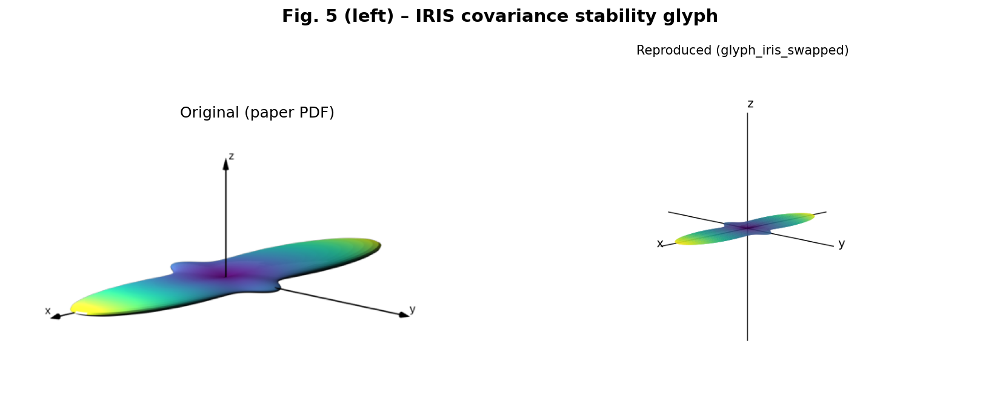
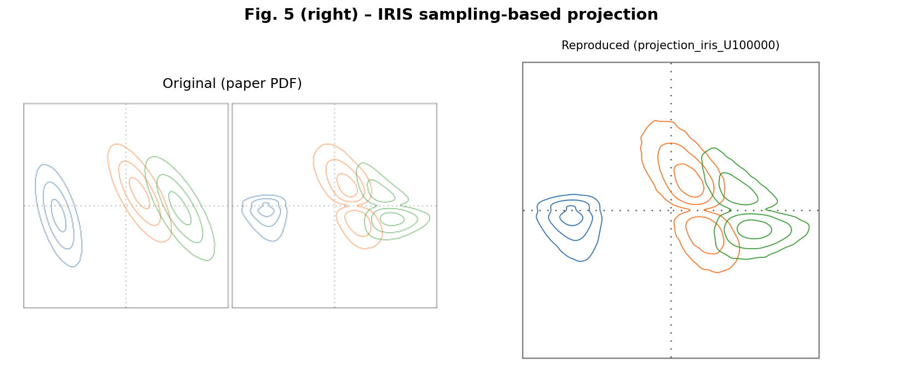
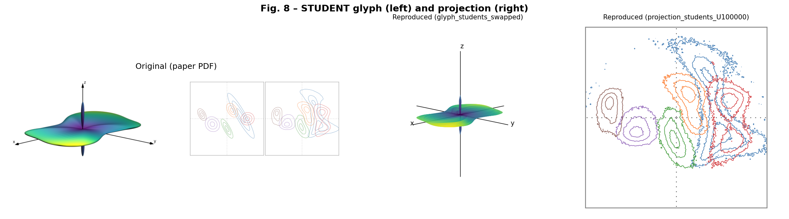
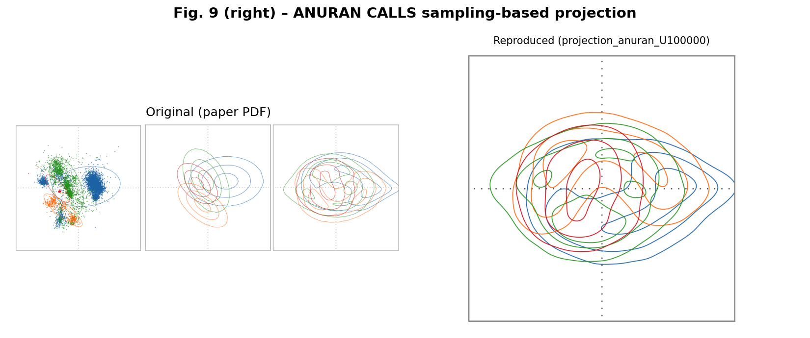

Summary
I ran the authors' public code and reproduced four figures: the covariance stability glyphs and the sampling-based PCA projections for the IRIS, STUDENT, and ANURAN CALLS datasets. All four show the same structure as the paper.
| Item | Authors | Me |
|---|---|---|
| Python | 3.13.5 | 3.10.10 |
| numpy | 2.3.1 | 2.2.6 (2.3.1 needs Python 3.11 or newer) |
| Samples U | 1,000,000 | 100,000 (runtime) |
| Glyph rendering | External tool (not in repo) | matplotlib, with x/z eigenvector order fixed (idx=[2,1,0] TODO in glyph.py) |
Fig. 5 – IRIS covariance stability glyph

Fig. 5 – IRIS sampling-based projection

Fig. 8 – STUDENT glyph and projection

Fig. 9 – ANURAN CALLS projection
